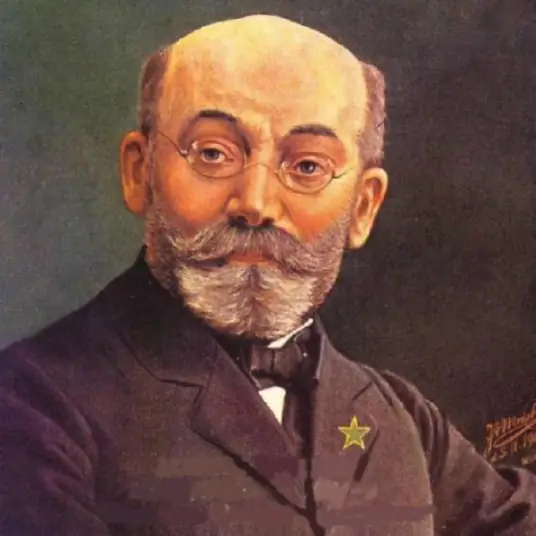

Lingvo internacia · 国际辅助语言
世界语Esperanto
1887 年 7 月 26 日，华沙出版了一本四十页左右的俄语小册子，署名"希望者博士"。它提出的不是一种新的民族语言，而是一门谁都不吃亏的第二语言：不属于任何国家，规则尽量少，发音怎么写就怎么读。作者是眼科医生拉扎鲁·路德维克·柴门霍夫，他给这门语言留下的名字，是笔名里的那个词——Esperanto。

01
缘起：一门语言为什么被造出来
柴门霍夫在比亚韦斯托克长大。那是一座波兰人、犹太人、俄国人、德国人混居的城市，几套语言彼此听不懂，误会和敌意就从这里长出来。他的判断很朴素：语言不通不是在制造分歧，而是在放大分歧。
他最初的方案叫 la lingvo internacia（国际语）。定位写得很清楚：它不取代任何人的母语，只做公共场合的第二语言；不属于哪个民族，因此每个使用者都不必在"说谁的语言"上做让步。读者很快改用他笔名的那个称呼——Doktoro Esperanto，希望者博士，语言也就被叫作 Esperanto。
为此他做了两件事。一是把语法压到最低：词性靠词尾区分，时态只有六个词尾，没有不规则变化。二是把构词做成积木：一个词根加上前后缀，就能长出一族词——patro（父亲）加女性后缀 -in- 就是 patrino（母亲），再加 ge- 就是 gepatroj（父母）。学词根比背单词省力，代价是你要习惯"现场造词"。
规则少不难，难的是让人相信：一门没有国土、没有军队的语言，值得学。
1887 年那本小册子之后，语言本身几乎没再改过。1905 年，第一届世界语大会在法国布洛涅召开，《世界语基础》（Fundamento de Esperanto）被确定下来，并附了一条今天听起来很硬的规矩：任何人都不得改动它。词汇可以增加，语法不能重写。
02
字母与发音：怎么写就怎么读
28 个字母，每个字母一个固定读音，没有不发音的字母，也没有一个读音对应多种拼写的麻烦。这是世界语最容易上手的部分，也是它最不像"外语"的部分。
中文近似只作参照，实际口型以 IPA 为准；字母格悬停可看例词。
三条通用规则值得先记住：重音永远落在倒数第二个音节（fa-MI-li-o、es-pe-RAN-to）；ŭ 只出现在元音之后，从不单独起头；打字不方便的旧键盘可以用 ch, gh, hh, jh, sh, u 替代带帽字母，这是 1905 年就允许的写法。
03
十六条官方规则
这十六条出自 1905 年的《世界语基础》，是官方核心，也是唯一不可修改的部分。前八条管词类，后八条管通则。
词类 · 规则 01–08
只有定冠词
冠词只有一个 la，相当于 the，不分性、数、格；没有不定冠词，domo 就是"一所房子"。初学者甚至可以先用不带冠词的句子。
la patro 那位父亲
名词以 -o 结尾
复数加 -j，宾格加 -n；只有主格与宾格两个格，其余关系交给介词。
patro · patroj · patron 父亲 · 父亲们 · 父亲（宾语）
形容词以 -a 结尾
形容词跟着名词一起变数、变格；比较级用 pli … ol，最高级用 plej。
belaj domoj · pli blanka ol neĝo 漂亮的房子们 · 比雪更白
数词直接拼接
基础词是 unu du tri kvar kvin ses sep ok naŭ dek cent mil，大数靠组合；后缀 -obl- 表倍数、-on- 表分数、-op- 表集合，po 表分配。
kvincent tridek tri · po kvin 533 · 每份五个
人称代词
mi vi li ŝi ĝi si ni ili oni；加 -a 变物主代词，加 -n 变宾格。
mia · min · oni diras 我的 · 我（宾语）· 人们说
动词不变人称
六个词尾管全部时态：-i 不定式、-as 现在、-is 过去、-os 将来、-us 虚拟、-u 命令或祈愿；六个分词词尾 -ant- -int- -ont- -at- -it- -ot- 分管主动与被动。被动语态是 esti 加被动分词，施动者用 de。
mi amas · mi amis · mi amos · ŝi estas amata de ĉiuj 我爱 · 我爱过 · 我将爱 · 她被所有人爱着
副词以 -e 结尾
比较方式与形容词相同。
mia frato kantas pli bone ol mi 我哥哥唱得比我好
介词后接主格
介词后面一律用基本形式，不加 -n；表示方向的例外见第 13 条。
kun la patro · al la patro 和父亲一起 · 给父亲
通则 · 规则 09–16
怎么写就怎么读
每个字母只有一个读音，没有不发音的字母，也没有含糊的连读。
Esperanto 字母逐一发音，重音在 -ran-
重音在倒数第二音节
没有例外，也不需要标注重音符号。
fa-mi-li-o · es-pe-ran-to 重音在倒数第二个音节：fa-MI-li-o
合成词直接拼接
词素连写，主词放在最后。
vaporŝipo vapor- 蒸汽 + ŝip- 船 = 轮船
一个否定就够了
句子里已有别的否定词时，不再加 ne；双重否定在世界语里等于肯定。
mi neniam vidis · mi nenion vidis 我从没见过 · 我什么都没看见
方向用 -n 表示
表示"向某处"时加 -n，与"在某处"形成对照。
kie? kien? tie tien 在哪？往哪？在那 往那
万能介词 je
所有介词都有固定含义；找不到合适的那个时，用没有独立含义的 je。
ĝoji je tio · ĝoji tion 为那件事高兴（两种写法都对）
外来词只借词根
国际词按世界语拼写借入，只借基本词，派生词用世界语词尾自己造。
teatro · teatra 剧院 · 戏剧的
可以省音
名词词尾 -o 与冠词 la 的 -a 可以省略并用撇号代替。今天基本只出现在诗歌和歌词里。
de l' mondo 世界的（诗歌用法）
04
造词：把规则写成函数
上一节第 2、3、5、6、7、11 条讲的都是词尾与词缀的拼接。既然这些拼接没有例外，它就能被写成代码：一个词根 + 若干官方词缀 + 一个词尾，必定得到合法的词。
官方词缀共 41 个——10 个前缀、31 个后缀，1905 年随《世界语基础》冻结，至今不得增删。它们对全体词根开放，不像英语的 un- / dis- 只服务少数单词：komput-（计算）接 -il-（工具）得 komputilo（计算机），manĝ-（吃）接 -aĵ-（具体物）得 manĝaĵo（食物）。所以世界语的词汇量不是靠背单词堆出来的，而是靠现场拼。
但词缀不是随便接的。-il- 要求前面是动作词根，-in- 要求前面是有生命的词根。所以 komputilo 成立；而按规则拿 dom-（房子）接 -in-，推不出"女房子"——语言里确实有 domino 这个词，但它是独立借进来的"淑女／多米诺"，不是这条规则生成的。下面的引擎把这条约束一起写了进去。
拆词 · 看一个词由哪几块拼成
造词 · 词根 + 前缀 + 后缀 + 词尾
05
八个词，先开口
点击任意一行可以播放录音（来自本项目的 audio 目录）。先听重音落在哪，再跟着念。
已备好 8 段录音。点击整行即可播放。
06
常用短语
先用在最有用的地方：打招呼、道谢、听不懂的时候求助。重音照例在倒数第二个音节。
问候与道别
| 世界语 | 发音 | 中文 | 场景 |
|---|---|---|---|
| Saluton! | /saˈluton/ | 你好 | 最通用，任何时间 |
| Bonan matenon | /ˈbonan maˈtenon/ | 早上好 | 上午 |
| Bonan tagon | /ˈbonan ˈtagon/ | 日安 | 白天 |
| Bonan vesperon | /ˈbonan vesˈperon/ | 晚上好 | 傍晚之后 |
| Ĝis revido | /dʒis reˈvido/ | 再见 | 字面：直到再见 |
| Bonan nokton | /ˈbonan ˈnokton/ | 晚安 | 睡前道别 |
礼貌与交流
| 世界语 | 发音 | 中文 | 场景 |
|---|---|---|---|
| Dankon | /ˈdankon/ | 谢谢 | danki 感谢 + 宾格 -on |
| Nedankinde | /nedanˈkinde/ | 不客气 | 回应道谢 |
| Bonvolu | /bonˈvolu/ | 请 | bona 好 + voli 愿意 |
| Pardonu | /parˈdonu/ | 对不起 | 道歉、请求重复 |
| Kiel vi fartas? | /ˈkiel vi ˈfartas/ | 你好吗？ | 字面：你过得怎样 |
| Mi fartas bone, dankon. | /mi ˈfartas ˈbone/ | 我很好，谢谢 | 标准回答 |
| Mi amas vin. | /mi ˈamas vin/ | 我爱你 | ami + 宾格 vin |
听不懂的时候
| 世界语 | 发音 | 中文 | 场景 |
|---|---|---|---|
| Ĉu vi parolas Esperanton? | /tʃu vi paˈrolas espeˈranton/ | 你说世界语吗？ | ĉu 引出一般疑问句 |
| Mi ne komprenas. | /mi ne komˈprenas/ | 我不明白 | 最实用的一句 |
| Bonvolu ripeti. | /bonˈvolu riˈpeti/ | 请再说一遍 | 没听清 |
| Kiom ĝi kostas? | /ˈkiom dʒi ˈkostas/ | 多少钱？ | 买东西 |
| Jes / Ne | /jes/ /ne/ | 是 / 不是 | 最基本的两句 |
07
运动、数据与争议
世界语最容易被讲错的地方是"有多少人在用"。诚实的答案是一个很大的区间：统计口径不同，结果能差三十倍。
| 指标 | 数字 | 说明 | 来源 |
|---|---|---|---|
| 使用者总数（估计） | 6 万 – 200 万 | "会说"的定义从能交流到熟练不等 | Libera Folio 2017 / Ethnologue |
| 母语者 | 约 1,000 – 2,000 | 约一千个家庭把孩子养在双语环境里 | Lindstedt 2006 / Ethnologue 2022 |
| 国际世界语协会（UEA）个人会员 | 4,700 | 来自 130 个国家和地区（2023 年） | UEA 2023 年度报告 |
| 世界语大会（UK） | 111 届编号 | 1905 年起每年一届，实际举办 108 届 | UEA / Wikipedia |
| 世界语维基百科 | 389,591 条 | 各语言版本中约第 38 位 | Wikimedia，2026-10-08 |
| 多邻国课程学习者 | 280 万 | 2015 年上线至 2020 年 3 月的累计人数 | Duolingo 数据 / Libera Folio |
运动本身也有一些不靠人数的支点。1954 年，联合国教科文组织在蒙得维的亚通过决议，承认世界语在语言与文化理解上的价值；今天它仍是这门语言在国际组织层面最常被引用的文件。更日常的是 Pasporta Servo：一份由世界语者互相提供免费住宿的名单，目前覆盖 121 个国家的两千四百多位东道主。学一门没有国土的语言，社交网络本身就是它的"领土"。
08
十题闯关
题目只考本文出现过的内容。答错会给出解析，做完可以重来；最好成绩会记在这台设备上。
键盘操作：1–4 选择，Enter 进入下一题。
09
来源与延伸
页面里的年份、规则条文与数字都可以在下面对到出处。数据核对于 2026 年 11 月。
- Akademio de Esperanto，《Fundamento de Esperanto》（1905）英文版语法——十六条规则的官方原文。akademio-de-esperanto.org
- PMEG，Plena Manlibro de Esperanta Gramatiko——最完整的免费语法参考，作者 Bertilo Wennergren。bertilow.com/pmeg
- Esperantopedia 数据页与十六条规则解读——本文数字区间的主要依据。esperantopedia.org
- UEA 2023 年度报告——会员人数与国家分布。uea.org
- Wikipedia：Esperanto / Esperanto orthography / Universal Congress of Esperanto——历史与大会届数。en.wikipedia.org
- Ethnologue——母语者与使用者估计。ethnologue.com
- 中华全国世界语协会——国内的世界语组织与活动。chinaesperantoligo.com.cn
世界语学习页 · 课程作业改版。录音来自本项目 audio/ 目录，肖像为公共领域历史图像的彩色化版本。
纸色 #FBFAF6 · 墨黑正文 · 单一强调色绿星绿 #1F6B3B